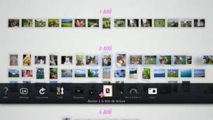

Création d'une liste de lecture à partir des photos sélectionnées
Vous pouvez sélectionner des photos pour créer une liste de lecture. Une liste de lecture vous permet d'afficher les photos sélectionnées dans le même ordre à chaque fois.
Création d'une liste de lecture
1. |
Dans [Espace bibliothèque], sélectionnez une photo que vous souhaitez ajouter à la liste de lecture, appuyez sur la touche  |
||||||||||||
|---|---|---|---|---|---|---|---|---|---|---|---|---|---|
2. |
Utilisez le joystick gauche pour vous déplacer jusqu'à une zone vide dans [Espace listes de lecture], puis appuyez sur la touche |
||||||||||||
3. |
Définissez les options suivantes pour la liste de lecture.
|
 (Ajouter à la liste de lecture).
(Ajouter à la liste de lecture). .
.
 (Musique) dans l'écran XMB™.
(Musique) dans l'écran XMB™.Conseils
- Les paramètres de la liste de lecture peuvent être modifiés ultérieurement sous
 (Modifier).
(Modifier). - Chaque liste de lecture possède ses propres paramètres.
Ajout de photos à une liste de lecture
1. |
Sélectionnez les photos que vous souhaitez ajouter à la liste de lecture, appuyez sur la touche |
|---|---|
2. |
Sélectionnez la liste de lecture, puis appuyez sur la touche |
Modification des paramètres d'une liste de lecture
Vous pouvez modifier les paramètres d'une liste de lecture. Sélectionnez la liste de lecture que vous souhaitez modifier, appuyez sur la touche  , puis sélectionnez (Modifier).
, puis sélectionnez (Modifier).
Déplacement d'une liste de lecture
Vous pouvez déplacer une liste de lecture vers un autre emplacement. Sélectionnez la liste de lecture que vous souhaitez déplacer, appuyez sur la touche , puis sélectionnez  (Déplacer). Vous pouvez déplacer la liste de lecture à l'aide du joystick gauche.
(Déplacer). Vous pouvez déplacer la liste de lecture à l'aide du joystick gauche.
Conseil
Vous pouvez également déplacer une liste de lecture sans passer par le menu. Sélectionnez la liste de lecture, puis appuyez sur la touche  et maintenez-la enfoncée tout en utilisant le joystick gauche pour déplacer la liste.
et maintenez-la enfoncée tout en utilisant le joystick gauche pour déplacer la liste.
Suppression d'une liste de lecture
Pour supprimer une liste de lecture, sélectionnez-la, appuyez sur la touche , puis sélectionnez  (Supprimer).
(Supprimer).